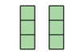

El propósito de esta lección es que los estudiantes interpreten expresiones de división y comprendan que la misma expresión de división se puede utilizar para representar ambos tipos de situaciones de división.
Narrativa de la lección.
Los estudiantes primero emparejan una expresión de división con una situación que podría representar. Luego, los estudiantes aprenden que la misma expresión de división puede corresponder tanto a problemas de "¿cuántos grupos?" como a problemas de "¿cuántos en cada grupo?", dependiendo de cómo se interprete el divisor, el número por el cual estamos dividiendo. Luego, los estudiantes tienen la oportunidad de emparejar dibujos y expresiones con situaciones antes de escribir sus propias expresiones de división en una lección posterior.
Preguntas de reflexión.
¿Qué aspectos de la lección de hoy permitieron a cada uno de sus estudiantes verse a sí mismos como pensadores matemáticos productivos?
SubsubsecciónCalentamiento (10 mins)
Tiempo recomendado.
10 minutos
Narrativa.
El propósito de esta conversación numérica es generar un espacio para ver las estrategias y comprensiones que los estudiantes tienen para restar dentro de 1,000, especialmente al sumar para encontrar diferencias. Estas comprensiones ayudan a los estudiantes a desarrollar fluidez para restar dentro de 1,000.
Lanzamiento.
Muestre una expresión.
“Hagan una señal cuando tengan una respuesta y puedan explicar cómo la obtuvieron.”
1 minuto: tiempo de reflexión en silencio
Desarrollo de la actividad.
Registre las respuestas y las estrategias.
Mantenga las expresiones y el trabajo visible.
Repita con cada expresión.
Calentamiento15.Conversación numérica: ¿Más o menos?
Encuentra mentalmente el valor de cada expresión.
\(\displaystyle 500 - 475\)
\(\displaystyle 504 - 475\)
\(\displaystyle 512 - 475\)
\(\displaystyle 512 - 449\)
Solución.
Ejemplos de respuestas
25. Le sumé 25 a 475 para llegar a 500.
29. Pensé en el primer problema y le sumé 4 a 25 para llegar a 504.
37. Comencé en 475 y le sumé 25 para llegar a 500. Luego, le sumé 10 para llegar a 510 y le sumé 2 más para llegar a 512. \(25 + 10 + 2 = 37\text{.}\)
63. Sé que a 449 le faltan 51 para llegar a 500 y después le sumé 12 más a 51.
Síntesis de la actividad.
“¿Por qué el valor de \(512 - 475\) es mayor que el valor de \(504 - 475\text{?}\)” (Dado que el 475 no cambia, pero 512 es mayor que 504, la diferencia entre los números es mayor.)
Considere preguntar:
“¿Alguien puede expresar el razonamiento de de otra forma?”
“¿Alguien usó la misma estrategia, pero la explicaría de otra forma?”
“¿Alguien pensó en el problema de otra forma?”
“¿Alguien quiere agregar algo a la estrategia de ?”
SubsubsecciónActividad 1 (10 mins)
Tiempo recomendado.
10 minutos
Narrativa.
El propósito de esta actividad es que los estudiantes emparejen expresiones de división con situaciones de división. Los estudiantes deben justificar sus emparejamientos articulando cómo los números en la expresión se conectan con lo que está sucediendo en la situación (MP2).
Lanzamiento.
Grupos de 2
Muestre la imagen.
“Estos juguetes se llaman trompos. En muchas culturas se juega con ellos. ¿Qué otros juguetes conocen?”
30 segundos: tiempo para pensar en silencio
Compartan las respuestas.
“Ahora vamos a trabajar con algunas situaciones que incluyen trompos. Vamos a ver situaciones sobre otros juguetes en próximas actividades.”
Desarrollo de la actividad.
“Con su compañero, emparejen cada situación con una expresión de división.”
3-5 minutos: tiempo de trabajo en parejas
Identifique a los estudiantes que puedan justificar sus emparejamientos explicando cómo los números en la expresión representan la situación.
Actividad16.Trompos.
Los trompos son populares en todo el mundo. Estos son trompos de diferentes culturas.
Empareja cada situación sobre trompos con una expresión que pueda representarla.
1. Clare tiene una colección de 24 trompos de cuatro colores: negro, blanco, rojo y verde. Tiene el mismo número de trompos de cada color. ¿Cuántos trompos tiene de cada color?
A. \(24 \div 2\)
2. Priya y su amigo están decorando con pintura 24 trompos de madera. Si cada persona pinta el mismo número de trompos, ¿cuántos trompos pinta cada persona?
B. \(12 \div 2\)
3. En una tienda tienen 24 trompos de todo el mundo exhibidos en 6 cajas. Cada caja contiene el mismo número de trompos. ¿Cuántos trompos hay en cada caja?
C. \(24 \div 4\)
4. Diego tiene 12 trompos que quiere regalar. Si a cada amigo le da 2 trompos, ¿cuántos amigos recibirán trompos?
D. \(12 \div 6\)
5. Seis amigos están jugando con 12 dreidels. Si cada uno juega con el mismo número de dreidels que los demás, ¿cuántos dreidels tiene cada persona?
E. \(24 \div 6\)
Solución.
1:C, 2:A, 3:E, 4:B, 5:D
Síntesis de la actividad.
Seleccione a los estudiantes identificados para compartir.
Considere preguntar: “¿Cómo representan los números de la expresión lo que hay en la situación?”
SubsubsecciónActividad 2 (10 mins)
Tiempo recomendado.
10 minutos
Narrativa.
El propósito de esta actividad es que los estudiantes comprendan que la misma expresión de división se puede utilizar para representar ambos tipos de situaciones de división. A los estudiantes se les dan dos situaciones y se les pide que emparejen una expresión de división con una de las situaciones, pero la expresión coincide con ambas situaciones dadas. Está bien si los estudiantes no reconocen que la expresión coincide con ambas situaciones en la actividad, porque se discutirá en la síntesis de la actividad. Los estudiantes aprenden que el número por el cual estamos dividiendo se llama divisor y comprenden que el divisor puede representar el tamaño de los grupos o el número de grupos. Cuando los estudiantes explican que un divisor se puede interpretar de manera diferente según la situación que representa, razonan abstracta y cuantitativamente (MP2).
Lanzamiento.
Grupos de 2
“Examinemos un poco más de cerca las expresiones de división. Tómense un minuto para leer estas dos situaciones.”
1 minuto: tiempo para pensar en silencio
Desarrollo de la actividad.
“Con su compañero, decidan cuál situación es representada por la expresión.”
“Trabajen con su compañero para decidir qué situación representa la expresión.”
2-3 minutos: tiempo de trabajo en pareja
Actividad17.Autos en cajas.
Considera estas dos situaciones.
A. Han tiene 21 autos de juguete y 3 cajas. Él pone el mismo número de autos en cada caja. ¿Cuántos autos habrá en cada caja?
B. Han tiene 21 autos de juguete y varias cajas. Él quiere poner 3 autos en cada caja. ¿Cuántas cajas necesitará?
¿Cuál situación está representada por la expresión \(21\div 3\text{?}\) Explica tu razonamiento.
Solución.
Ejemplos de respuestas
Ambas situaciones están representadas por la expresión \(21\div 3\text{.}\) El 3 en la situación A es en número de cajas y el 3 en la situación B es el número de autos que va en cada caja.
Síntesis de la actividad.
Invite a los estudiantes a compartir sus respuestas y razonamientos.
“¿Cómo puede la misma expresión representar dos situaciones diferentes?” (Ambas situaciones involucran los mismos números, 21 y 3. Ambas situaciones involucran poner 21 objetos en grupos iguales. En un caso, el 3 es el número de objetos en el grupo, pero en el otro, es el número de grupos. Ambas situaciones hablan de 21 dividido por 3, solo de diferentes maneras.)
“Observamos que el número entre el que estamos dividiendo, 3, puede tener dos significados diferentes. Puede significar 3 grupos o 3 objetos en cada grupo.”
“Cuando dividimos, el número entre el que dividimos se llama el divisor. En la expresión \(27\div 3\text{,}\) el divisor es 3.”
Desarrollo de lenguaje matemático.
MLR2 Recopilar y Mostrar. Circule y recopile el lenguaje que los estudiantes usan mientras consideran las dos situaciones. Escuche y aclare cualquier pregunta sobre el contexto. En una presentación visible, registre palabras y frases como: poner en grupos, dividir, número de grupos, etc. Durante la síntesis, agregue "divisor" a la presentación y resalte las conexiones con cualquier lenguaje relacionado.
Avances: Conversación, Lectura
SubsubsecciónActividad 3 (15 mins)
Tiempo recomendado.
15 minutos.
Narrativa.
El propósito de esta actividad es que los estudiantes apliquen lo que han aprendido sobre las representaciones de la división para relacionar dibujos y expresiones con situaciones de división (MP2). Al hacerlo, solidifican su comprensión de que la misma expresión de división puede representar ambos tipos de situaciones de división. Los dibujos dados permiten a los estudiantes ver la cantidad de grupos y cuántos objetos hay en cada grupo. El trabajo aquí ayuda a los estudiantes a hacer conexiones entre las tres representaciones antes de que escriban sus propias expresiones de división y resuelvan problemas de división en una lección posterior. Cuando los estudiantes describen cómo una ecuación puede representar diferentes historias, prestan atención a la precisión en el lenguaje que utilizan y a la correspondencia que establecen entre la ecuación y las historias (MP6).
Lanzamiento.
Grupos de 2
“Ahora que hemos representado situaciones de división con dibujos y con expresiones, vamos a asociar algunas situaciones con ambas representaciones.”
“Lean estas situaciones.”
1-2 minutos: tiempo de reflexión en silencio
“Discutan con su compañero en qué se parecen y en qué se diferencian estas situaciones.”
2-3 minutos: discusión en pareja
Compartan las respuestas.
Desarrollo de la actividad.
“Ahora, con su compañero, asocien cada situación con un dibujo y con una expresión que representan la situación”
3-5 minutos: tiempo de trabajo en pareja
Actividad18.Pilas de bloques.
Asocia cada situación con un dibujo y con una expresión que representan la situación. Prepárate para explicar tu razonamiento.
Kiran usa 6 bloques para hacer pilas. Cada pila tiene 2 bloques. ¿Cuántas pilas hay?
Han usa 6 bloques para hacer dos pilas iguales. ¿Cuántos bloques hay en cada pila?
Jada usa 6 bloques para construir pilas que tienen 3 bloques cada una. ¿Cuántas pilas hay?
Mai usa 6 bloques para hacer 3 pilas iguales. ¿Cuántos bloques hay en cada pila?
Dibujos
A

B
Expresiones
C
\begin{equation*}
6\div 2
\end{equation*}
D
\begin{equation*}
6\div 3
\end{equation*}
Solución.
B y C
A y C
A y D
B y D
Síntesis de la actividad.
“Consideremos las primeras dos situaciones sobre Kiran y Han. ¿Por qué podemos usar la misma expresión para representar estas situaciones, pero tenemos que usar dibujos diferentes?” (Ambas situaciones se representan con 6 dividido entre 2, pero en la primera situación el 2, o el divisor, es la cantidad de bloques en cada pila. En la segunda situación, el 2 es el número de pilas.)
“Ahora examinemos las situaciones de Han y Jada. ¿Por qué podemos usar el mismo dibujo para representar estas situaciones, pero no la misma expresión?” (Ambas situaciones describen 2 grupos de 3, por lo que coinciden con el mismo dibujo. La primera situación es de 6 bloques divididos entre 2 pilas y la segunda situación es de 6 bloques divididos en grupos de 3.)
SubsubsecciónSíntesis de la lección (10 mins)
Tiempo recomendado: 10 mins.
Muestre algunas expresiones, como estas:
\begin{equation*}
6\div 2
\end{equation*}
\begin{equation*}
6\div 3
\end{equation*}
“¿Hay alguna manera de distinguir las expresiones que representan un problema de "¿cuántos grupos?" de las expresiones que representan un problema de "¿cuántos hay en cada grupo?"?” (No, no solo mirando la expresión. Tendríamos que volver a mirar la situación o el dibujo.)
“Las expresiones de división se pueden interpretar de dos formas y no podemos realmente saber qué tipo de situación de división representa, a menos que tengamos una situación o un dibujo que vaya con la expresión.”